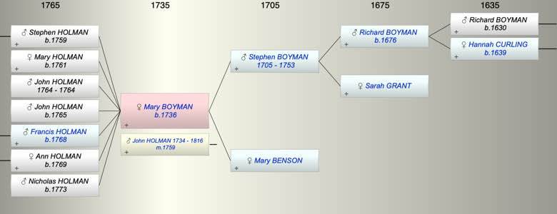

| [Index] |
| Mary BOYMAN (1736 - ) |
|  |
| b. 1736 at St Lawrence |
| m. 13 Feb 1759 John HOLMAN (1734 - 1816) at St Laurence |
| Parents: |
| Stephen BOYMAN (1705 - 1753) |
| Mary BENSON |
| Children (7): |
| Stephen HOLMAN (1759 - ) |
| Mary HOLMAN (1761 - ) |
| John HOLMAN (1764 - 1764) |
| John Cooper HOLMAN (1765 - ) |
| Francis HOLMAN (1768 - ) |
| Ann HOLMAN (1769 - ) |
| Nicholas HOLMAN (1773 - ) |
| Grandchildren (8): |
| Stephen HOLMAN (1785 - ), Jane (1789 - ), Mary Ann HOLMAN ( - 1824), Elizabeth HOLMAN (1799 - ), Francis BROWN, Robert BROWN, Thomas BROWN, Stephen BROWN (1799 - ) |
| Events in Mary BOYMAN (1736 - )'s life | |||||
| Date | Age | Event | Place | Notes | Src |
| 1736 | Mary BOYMAN was born | St Lawrence | Note 1 | ||
| 1753 | 17 | Death of father Stephen BOYMAN (aged 48) | |||
| 1759 | 23 | Birth of son Stephen HOLMAN | St Laurence | Note 2 | |
| 13 Feb 1759 | 23 | Married John HOLMAN (aged 25) | St Laurence | ||
| 1761 | 25 | Birth of daughter Mary HOLMAN | St Laurence | Note 3 | |
| 1764 | 28 | Birth of son John HOLMAN | St Laurence | Note 4 | |
| 1764 | 28 | Death of son John HOLMAN | St Laurence | Note 5 | |
| 1765 | 29 | Birth of son John Cooper HOLMAN | St Laurence | Note 6 | |
| 1768 | 32 | Birth of son Francis HOLMAN | St Laurence | Note 7 | |
| 1769 | 33 | Birth of daughter Ann HOLMAN | St Laurence | Note 8 | |
| 1773 | 37 | Birth of son Nicholas HOLMAN | St Laurence | Note 9 | |
| 1816 | 80 | Death of husband John HOLMAN (aged 82) | St Laurence | Note 10 | |
| Personal Notes: |
| did she marry John Holman 1759 St L see Ancestry Keith. has yes |
| Created on a Mac™ using iFamily for Mac™ on 8 Oct 2023 |